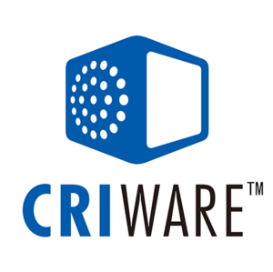

Business Solution Area https://www.cri-mw.co.jp/
Based in Tokyo, CRI Middleware pioneered audio and video CODEC technology with SEGA in the early '90's and is now a leading provider of multi-platform audio and video solutions for interactive media including the flagship development toolkit, CRIWARE.